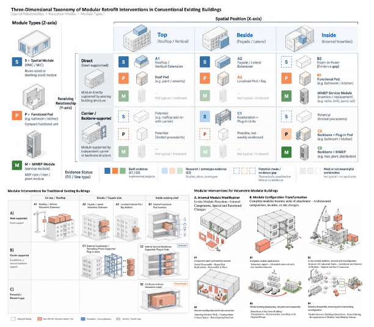
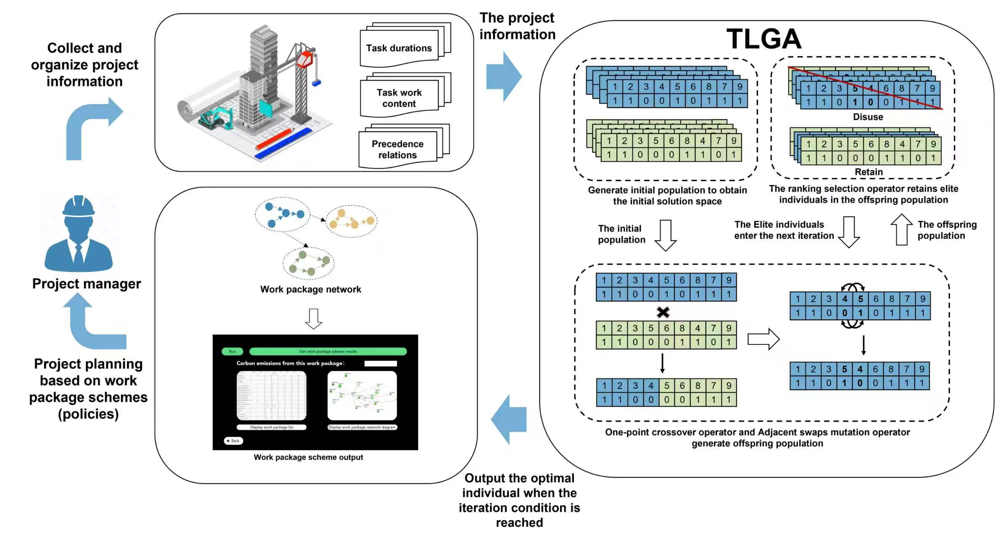
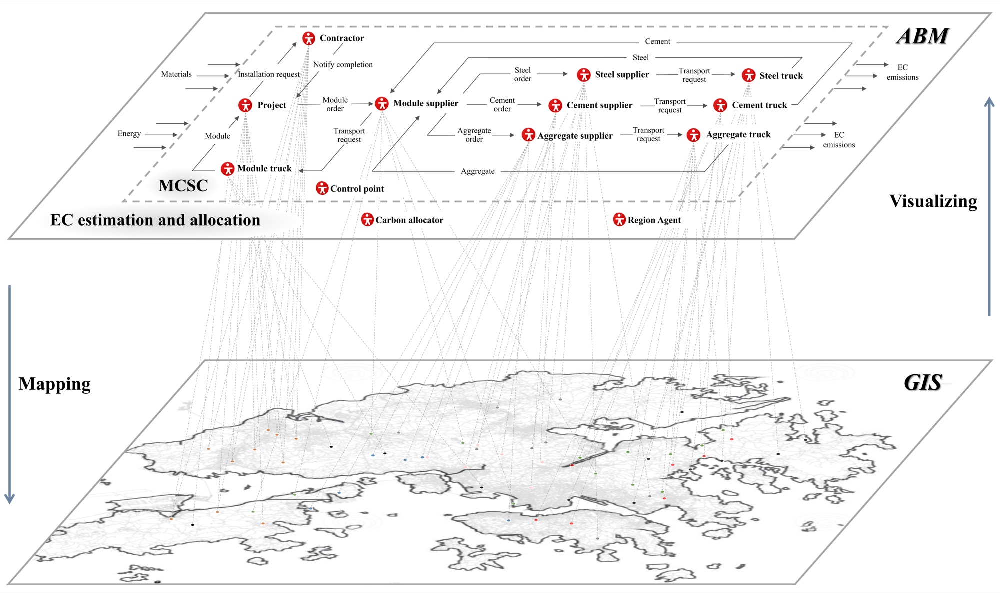
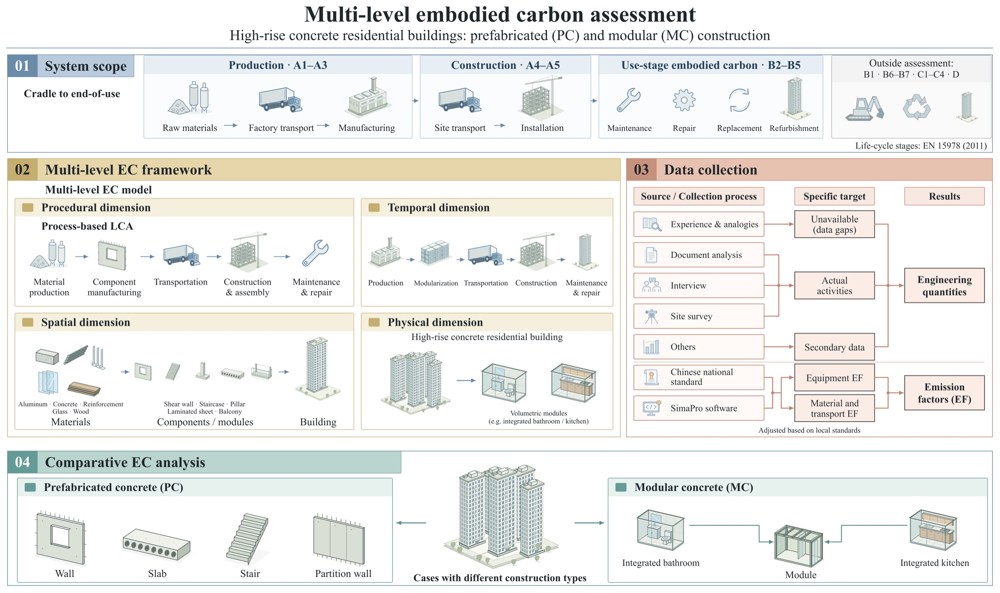

Construction Carbon Management & Optimization

Assess the feasibility and applicability of modular retrofit for existing buildings, and identify potential modular intervention strategies and their carbon-reduction pathways.

Develop a work package-based project planning and optimization framework to reduce carbon emissions in Modular Integrated Construction (MiC). Integrate productivity-based carbon modeling, evolutionary optimization algorithms, and LLM-assisted heuristics to enable carbon-aware planning and support informed decision-making that balances environmental performance, project costs, and operational efficiency.

Develop a hybrid agent-based modelling (ABM) and geographic information system (GIS) model for quantifying the city-scale embodied carbon flows and emission responsibility across the modular construction supply chain.

Develop a multi-level embodied carbon assessment framework to compare prefabricated and modular construction in high-rise concrete residential buildings, and guide the selection of low-carbon construction options.